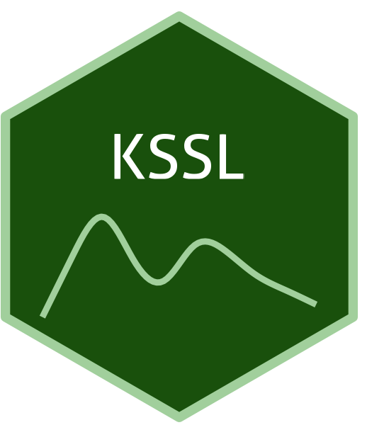

The USDA-NRCS NCSS Kellogg Soil Survey Laboratory (KSSL) soil libraries from the United States and other territories
VNIR
NIR
MIR
national
- Sample size
- 90,000+
- Version
- snapshot Jul 2022
View dataset